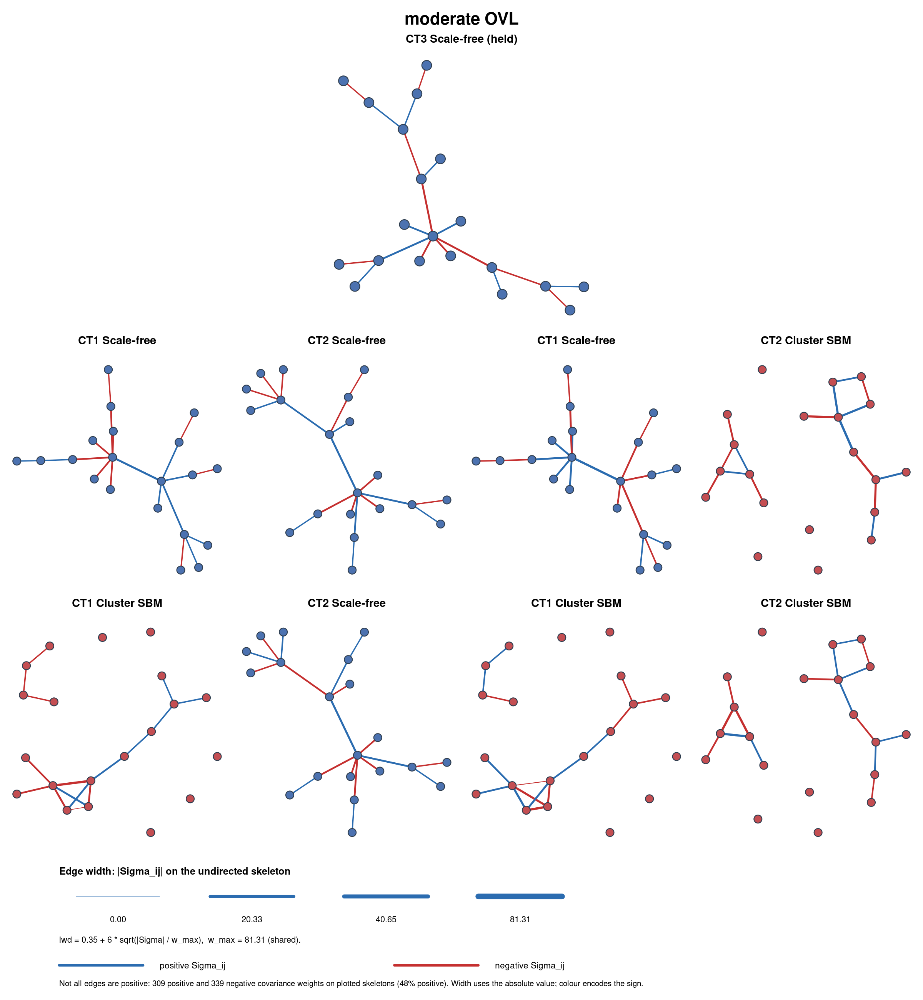
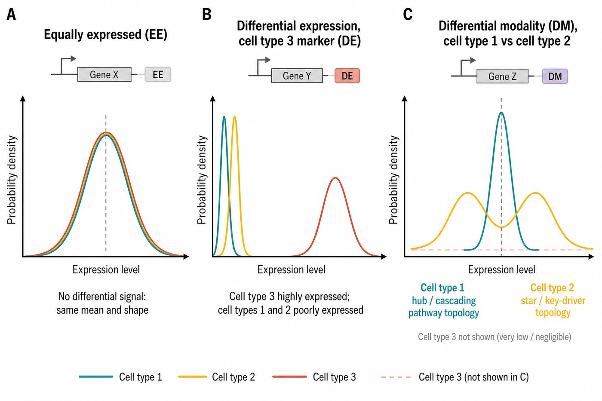

library(DeCovarT)
deconvolution_functions <- list(
"nnls" = list(FUN = deconvolute_ratios_nnls),
"lsei" = list(FUN = deconvolute_ratios_deconrnaseq),
"Marquardt-Levenberg" = list(
FUN = deconvolute_ratios_Marquardt_Levenberg,
additional_parameters = list(epsilon = 1e-3, itmax = 200)
)
)
bivariate <- benchmark_bivariate_gaussian_convolutions(
proportions = list(
"balanced" = c(0.5, 0.5),
"highly unbalanced" = c(0.95, 0.05)
),
signature_matrices = list(
"small CLD" = matrix(c(20, 22, 22, 20), nrow = 2),
"large CLD" = matrix(c(20, 40, 40, 20), nrow = 2)
),
corr_sequence = seq(-0.8, 0.8, by = 0.2),
diagonal_terms = list("homoscedastic" = c(1, 1)),
deconvolution_functions = deconvolution_functions,
n = 500,
cores = 1
)This vignette walks through two complementary simulation use cases for DeCovarT:
- a bivariate toy model (G=2 genes, J=2 cell types) that isolates the effect of gene–gene correlation on mean-only versus covariance-aware deconvolution;
- a high-dimensional hybrid scenario (G=50, J=3) with two mean-collinear cell types that must be separated by network topology, plus an orthogonal third type—then a head-to-head comparison of the package’s frequentist solvers on imbalanced mixtures.
Bivariate toy model: when covariance hurts mean-only deconvolution
The manuscript’s bivariate study (two genes, two cell populations) is implemented by benchmark_bivariate_gaussian_convolutions() in R/02_01_toy_simulation.R. The purpose is deliberately narrow: show that even when mean expression profiles are similar, accounting for the covariance between genes can (a) degrade standard mean-only deconvolution algorithms, and (b) be partly alleviated by DeCovarT’s native inclusion of \boldsymbol{\Sigma}(\boldsymbol{p})=\sum_j p_j^2\boldsymbol{\Sigma}_j.
Generative design
With the simplex constraint p_1+p_2=1, only one free unconstrained coordinate \rho_1 needs to be estimated (via the additive logistic map; see the softmax / ALR vignette). Bulk mixtures \boldsymbol{Y}\in\mathcal{M}_{G\times N} are simulated without observation noise beyond the Gaussian convolution itself:
- Proportions. Equi-balanced \boldsymbol{p}=(1/2,1/2) and highly unbalanced \boldsymbol{p}=(0.95,0.05) (the exported helper also accepts intermediate unbalanced levels such as (0.6,0.4)).
- Means. Two centroid geometries: a small mean separation \boldsymbol{\mu}_{.1}=(20,22), \boldsymbol{\mu}_{.2}=(22,20) (high overlap) versus a large separation \boldsymbol{\mu}_{.1}=(20,40), \boldsymbol{\mu}_{.2}=(40,20).
- Covariances. Homoscedastic diagonals \mathrm{diag}(\boldsymbol{\Sigma}_j)=\boldsymbol{I}_2, with the pairwise gene–gene correlation \mathrm{Cor}(x_1,x_2) swept over \{-0.8,-0.6,\ldots,0.8\} independently for each cell type.
benchmark_bivariate_gaussian_convolutions() enumerates this factorial design with tidyr::expand_grid(), tags each scenario with a unique ID, simulates N bulk replicates via simulate_bulk_mixture(), and calls deconvolute_ratios() for every algorithm in deconvolution_functions.
How to run it
The returned list has two tibbles: config (design, Shannon entropy of \boldsymbol{p}, MixSim overlap) and simulations (per-sample estimates and error metrics). The article compares DeCovarT against DeconRNASeq / NNLS (Gong and Szustakowski 2013): overlap of the two cell-type Gaussians is a strong proxy for estimation quality—the lower the overlap, the lower the MSE—while strong gene–gene correlation at fixed means inflates mean-only error and is partially recovered once \boldsymbol{\Sigma}_j enters the likelihood (ComplexHeatmap panels in the manuscript).
High-dimensional hybrid scenario and deconvolution
The earlier factorial design swept one topology and one cosine level at a time, keeping a single shared covariance across all J cell types (simulate_hierarchical_grn_moments(); see GGM networks). scripts/generate_random_markov_network.R instead builds one scenario that stresses several axes of the feature-selection pipeline simultaneously: two cell types that are unrecoverable from \boldsymbol{\mu} alone and must be told apart from topology, a third cell type set apart by a compact marker block, and a null block that should survive every selection stage as discarded. Notation matches the manuscript: G=50 genes, J=3 cell types, N bulk samples for \boldsymbol{Y}\in\mathcal{M}_{G\times N}.
Gene and cell-type design
The G=50 genes are partitioned into three blocks, and each cell type gets its own G\times G precision \boldsymbol{\Omega}_j (not a shared one):
\underbrace{\mathcal{G}_{12}}_{30\text{ genes}} \ \cup\ \underbrace{\mathcal{G}_{3}}_{10\text{ genes}} \ \cup\ \underbrace{\mathcal{G}_{\mathrm{eq}}}_{10\text{ genes}}, \qquad \boldsymbol{\Omega}_j = \mathrm{blockdiag}\bigl( \boldsymbol{\Omega}_j^{(\mathcal{G}_{12})},\, \boldsymbol{\Omega}_j^{(\mathcal{G}_{3})},\, \boldsymbol{\Omega}_j^{(\mathcal{G}_{\mathrm{eq}})} \bigr), \qquad j=1,2,3.
\boldsymbol{\mu} is built by two iterative calls to generate_mean_signature_matrix() (Eq. mean cosine): first on \mathcal{G}_{12} for the pair (cell type 1, cell type 2) with a high target cosine \rho_{12}=0.95 (near-collinear, per mean signature construction); then on a pool of 2\times10 genes for the pair (merged \{1,2\}, cell type 3) with a low target cosine \rho_{3}=0.05 (near-orthogonal), keeping only the 10 genes whose private block belongs to cell type 3. \mathcal{G}_{\mathrm{eq}} gets a flat baseline directly (identical mean in all three types by construction). Only \mathcal{G}_{12} and \mathcal{G}_3 carry a mean signal; cell types 1 and 2 are, by design, mean-indistinguishable on \mathcal{G}_{12}.
Following the BLGGM hybrid design (GGM networks), each block’s local topology is set independently per cell type, with no edges between blocks:
| Gene block | # genes | Cell type 1 | Cell type 2 | Cell type 3 |
|---|---|---|---|---|
shared_12_vs_3 |
30 | stochastic block model (hub-like modules) | star (single key-driver gene) | Erdős–Rényi (background) |
marker_3 |
10 | Erdős–Rényi (background) | Erdős–Rényi (background) | scale-free |
equal_all |
10 | Erdős–Rényi | Erdős–Rényi | Erdős–Rényi |
Cell types 1 and 2 therefore differ only on shared_12_vs_3, and only through \boldsymbol{\Omega}: hub/stochastic-block modules (cascading-pathway-like) for cell type 1 versus a single star (one key-driver gene) for cell type 2. equal_all is wired identically (Erdős–Rényi) in every cell type, matching its complete lack of mean signal.
The generative construction (seed 20260807) lives in scripts/generate_random_markov_network.R. Table 2 and Table 3 report a fixed draw from that pipeline so the Quarto vignette builds without requiring a live library(DeCovarT) in the Quarto subprocess (which can miss the temporary library during R CMD build on some platforms).
| pair | cosine | euclidean |
|---|---|---|
| celltype_1 vs celltype_2 | 0.973 | 2.76 |
| celltype_1 vs celltype_3 | 0.562 | 11.22 |
| celltype_2 vs celltype_3 | 0.562 | 11.22 |
| cell type | topology | $\lambda_{\min}$ | $\lambda_{\max}$ | $\kappa(\Omega)$ | prop inhib |
|---|---|---|---|---|---|
| celltype_1 | SBM (hub-like modules) | 0.1 | 1.68 | 16.8 | 0.5 |
| celltype_2 | star (single key driver) | 0.1 | 3.33 | 33.3 | 0.489 |
| celltype_3 | scale-free (marker genes) | 0.1 | 2.1 | 21 | 0.5 |
Column guide: \lambda_{\min}, \lambda_{\max}, and \kappa(\boldsymbol{\Omega})=\lambda_{\max}/\lambda_{\min} summarise the precision spectrum of each cell type’s own \boldsymbol{\Omega}_j; prop_inhib is the realised fraction of inhibitory precision edges. Table 2 shows cell types 1 and 2 near-collinear (cosine \approx 0.97), tracking the local target \rho_{12}=0.95 used on shared_12_vs_3. Cell type 3, however, sits at only a moderate cosine (\approx0.56) from the other two—well above the local target \rho_{3}=0.05 used on the marker_3 pool. The gap is exactly the finite-sample effect of asymptotic cosine control: the flat celltype_12_merged background on shared_12_vs_3 and the identical equal_all baseline both contribute a strictly positive term to every pairwise inner product over the full G=50 vector, diluting the block-local orthogonality of marker_3 alone. Table 3 shows that, despite the shared mean on shared_12_vs_3, cell types 1 and 2 carry distinct, well-conditioned precision spectra—exactly the topology-only separation the scenario is designed to require.
Figure 1 renders the three realised networks with igraph, coloured by gene block and by precision-edge sign.

shared_12_vs_3 genes; a single star (one key-driver gene) for cell type 2 on the same 30 genes; and a scale-free network for cell type 3 restricted to its own 10 marker_3 genes. The equal_all block (grey) is wired as Erdős–Rényi in every cell type. Edge colour encodes the sign of the precision entry (red = inhibitory, teal = activatory); node colour encodes the gene block.
The full pipeline built on this scenario—mean signature, per-cell-type topologies, N=200 bulk simulation, and the pre-selection / NSGA-II feature-selection stages it stresses—is reproduced end-to-end in scripts/generate_random_markov_network.R.
Deconvolution on imbalanced mixtures
scripts/deconvolute_simulated_scenario.R loads the NSGA-II-curated moments from data/synthetic_networks/true_grn_moments.rds, restricts to the final gene panel, simulates N=20 bulk mixtures with imbalanced true composition \boldsymbol{p}=(0.4,0.4,0.2) (equal mass on the two mean-collinear types; 0.2 on the orthogonal type), and runs every frequentist solver from an equi-balanced start. Table 4 summarises a diagnostic run before the numerical fixes documented in the softmax / ALR vignette: stalled Newton–Raphson (eval.max = 1), slow Marquardt–Levenberg (wrong Hessian sign under marqLevAlg), and the benefit of polishing simulated annealing with a local Newton step.
| algorithm | n_ok | n_flagged | mean max|error| | mean time/sample |
|---|---|---|---|---|
| gradient_descent (BFGS) | 20 | 0 | 0.145 | 2.6 ms |
| Newton_Raphson (as shipped) | 0 | 20 | 0.133 | 8.6 ms |
| Newton_Raphson_fixed | 20 | 0 | 0.102 | 39 ms |
| sann_then_polish | 20 | 0 | 0.102 | 55.6 ms |
| simulated_annealing | 18 | 2 | 0.11 | 58.7 ms |
| L_BFGS_B | 20 | 0 | 0.1 | 86.9 ms |
| Marquardt_Levenberg | 18 | 2 | 0.102 | 1662 ms |
Key reading of Table 4:
-
Newton_Raphson(as shipped) never left the equi-balanced start (n_ok = 0):stats::nlminb()was capped at a single objective evaluation (eval.max = 1). -
Newton_Raphson_fixed(same code without that control) andsann_then_polishboth recover mean max|error|\approx 0.102, matching a correctly configured second-order step. -
Marquardt_Levenbergalready reached similar accuracy but at $$1.7 s/sample because the relative-distance-to-minimum (RDM) criterion never fired (Hessian sign convention undermarqLevAlg; see numerical notes). -
simulated_annealingstalled on 2/20 samples; polishing with Newton after a SANN warm start removed those stalls without a proximal simplex projection (the ALR map already lands on the open simplex).
After the package fixes (removed eval.max = 1, analytic gradient for L-BFGS-B, cached Cholesky factorisation of \boldsymbol{\Sigma}(\boldsymbol{p}), negated Hessian for marqLevAlg), Newton–Raphson, Marquardt–Levenberg and sann_then_polish agree to about four decimals, and Marquardt–Levenberg drops to tens of milliseconds per sample. Reproduce the current comparison with:
source("scripts/deconvolute_simulated_scenario.R")Related literature
Pseudobulk simulation tools such as muscat (Crowell et al. 2020) aggregate single-cell counts across samples and conditions for differential-state testing; scDD (Korthauer et al. 2016) partitions genes, relative to a reference condition, into five differential-distribution (DD) patterns: equivalent expression (EE), differential expression (DE, a mean shift with one mode preserved per condition), differential proportion (DP, a shift in the mixing weights of a shared bimodal pattern), differential modality (DM, a change in the number of modes without necessarily shifting the overall mean), and differential expression and modality combined (DB).
The hybrid scenario above instantiates a loose, network-level analogue of three of these patterns, tailored to deconvolution rather than to single-cell distribution testing directly (Figure 2):
- the 10
equal_allgenes are EE: identical mean and identically Erdős–Rényi-wired second-order structure in every cell type; - the 10
marker_3genes are DE against the merged \{1,2\} background: a mean shift confined to cell type 3, layered on a scale-free local topology; - the 30
shared_12_vs_3genes are DE against cell type 3 but, between cell types 1 and 2 specifically, carry no mean shift at all—only the precision-matrix topology (Table 1) differs. This is not scDD’s original single-gene DM test (unimodal versus bimodal marginal densities within one gene), but it plays a structurally similar role here: two populations a mean-only model cannot separate, which a covariance-aware model such as DeCovarT is designed to exploit.

equal_all), differential expression marking cell type 3 (DE, marker_3), and a differential-modality-like contrast between cell types 1 and 2 that is invisible at the mean level and only resolved by network topology (DM-like, shared_12_vs_3).
DeCovarT’s generator is narrower—it fixes \boldsymbol{\mu} through Eq. mean cosine and Eq. low-rank block rather than estimating signatures from real scRNA-seq—but the same low-rank-plus-block intuition underpins many reference-matrix constructions cited above.
References
Crowell, Helena L., Charlotte Soneson, Pierre-Luc Germain, et al. 2020. ‘Muscat Detects Subpopulation-Specific State Transitions from Multi-Sample Multi-Condition Single-Cell Transcriptomics Data’. Nature Communications 11: 6077. https://doi.org/10.1038/s41467-020-19894-4.
Gong, Ting, and Joseph D. Szustakowski. 2013. ‘DeconRNASeq: A Statistical Framework for Deconvolution of Heterogeneous Tissue Samples Based on mRNA-Seq Data’. Bioinformatics (Oxford, England) 29. https://doi.org/10.1093/bioinformatics/btt090.
Korthauer, Keegan D., Li-Fang Chu, Michael A. Newton, et al. 2016. ‘A Statistical Approach for Identifying Differential Distributions in Single-Cell RNA-seq Experiments’. Genome Biology 17: 222. https://doi.org/10.1186/s13059-016-1077-y.